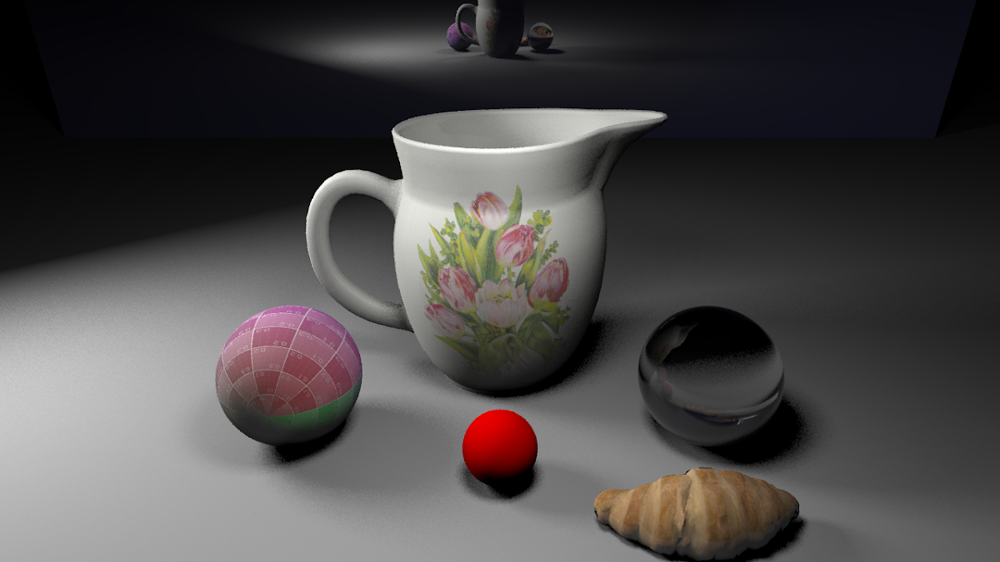

Graphics · Sep–Dec 2022
Building a Ray Tracer
Writing the geometry, light, and material calculations behind a rendered image
I wrote a C++ ray tracer for a Columbia graphics course, implementing shading, reflection, refraction, texture mapping, and mesh support. I added ambient, point, and area lights, antialiasing, soft shadows, and a bounding-volume hierarchy. The project made image construction concrete: each visible effect depended on geometry, material calculations, and code.
- My role
- Independent C++ implementation
- Status
- Completed Columbia University course project

Implement the image-making machinery
For this Columbia University course project, I implemented my own ray tracer in C++ on Codio. I worked on the calculations behind shading, reflections, and refractions, rather than relying on a finished rendering engine to produce those effects.
The renderer supported ambient, point, and area lights. I also implemented antialiasing and soft shadows, giving the project several distinct ways to connect a numerical calculation with an observable feature of the image.
Represent more than simple shapes
I wrote C++ mesh classes with functionality comparable to parts of OpenMesh and added texture mapping. This extended the work from light calculations to the representation of objects and their surfaces.
I also built a bounding-volume hierarchy to organize ray-intersection testing. That connected the visible complexity of a scene to the data structure used to search it: the renderer needed both geometric detail and an efficient way to decide which surfaces a ray might hit.
Read an image through its implementation
What interests me about this project is the connection between appearance and mechanism. A reflected surface, a refracted view, a textured mesh, and a soft shadow correspond to different pieces of the implementation. I can discuss the image in terms of those specific features rather than a general claim of realism. The linked rendered result is the surviving visual artifact of the course work.
Outcomes
- I implemented a C++ renderer with lighting, material effects, texture mapping, mesh support, and image-sampling features.
- I added BVH intersection organization and retained a rendered result from the project.